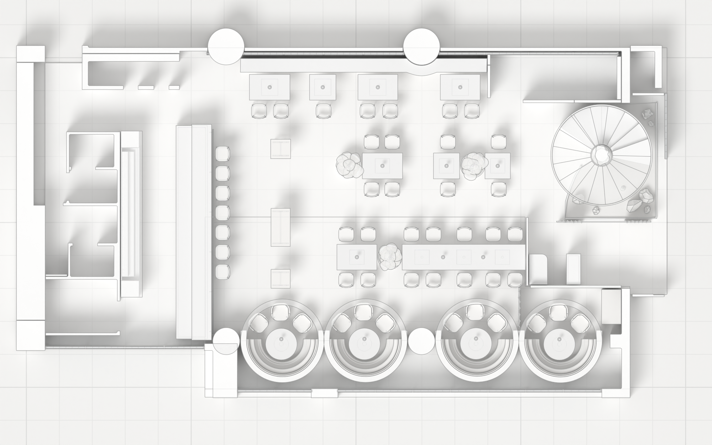
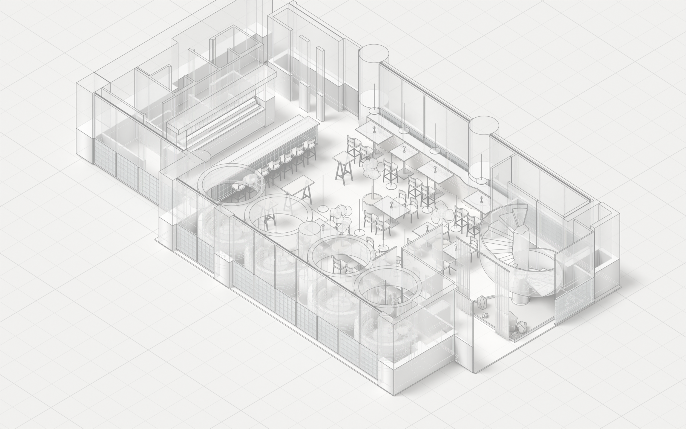
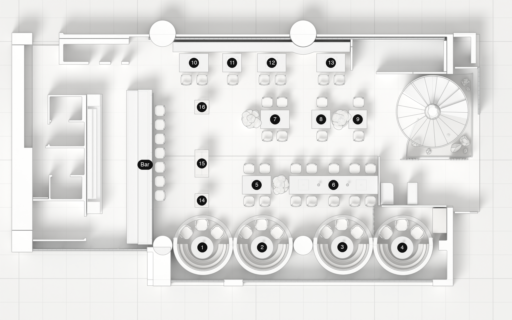
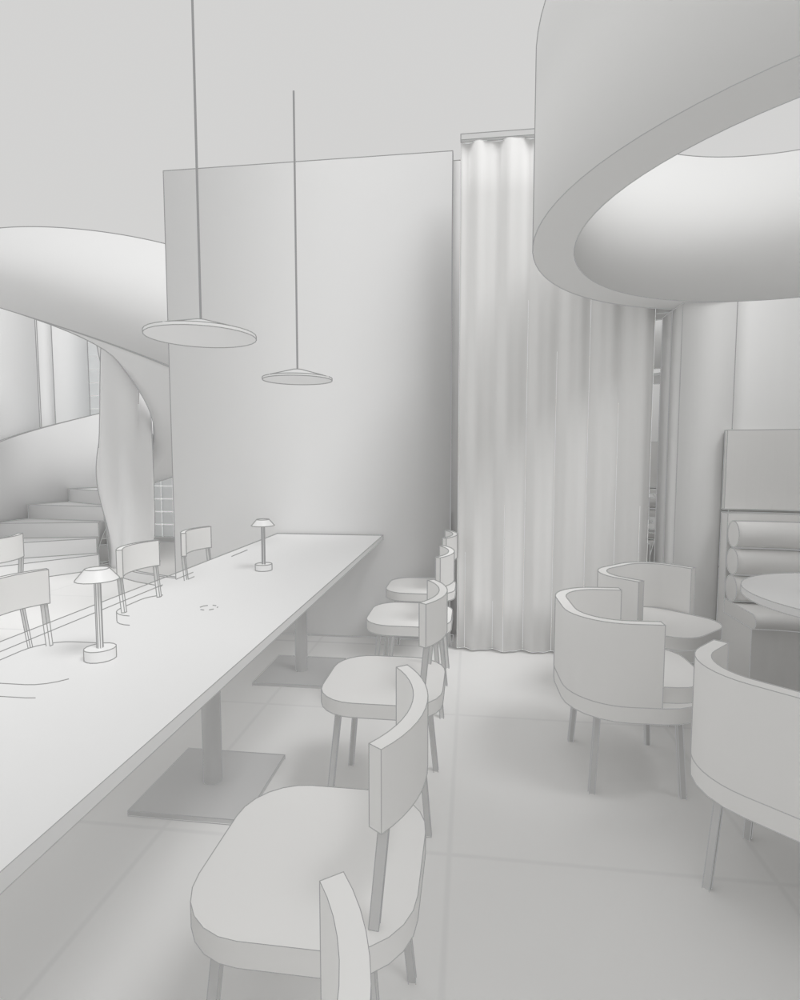
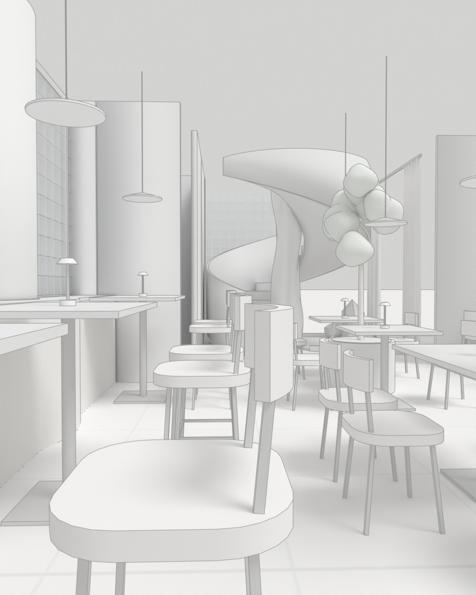
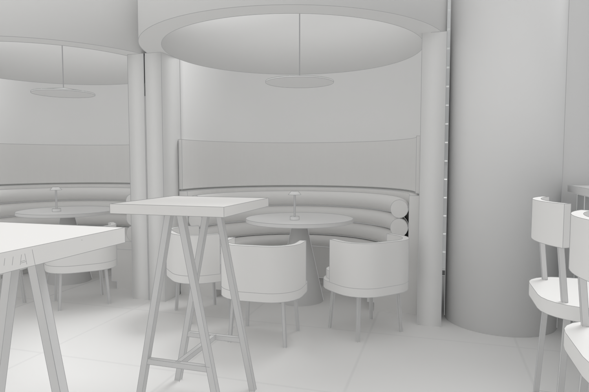
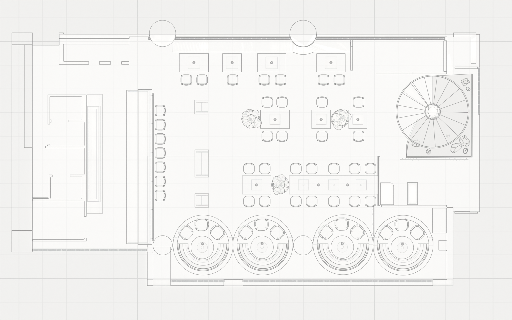
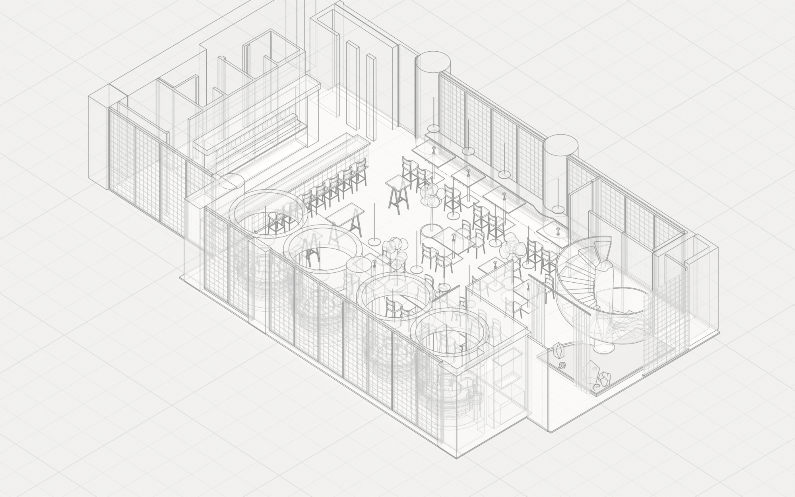
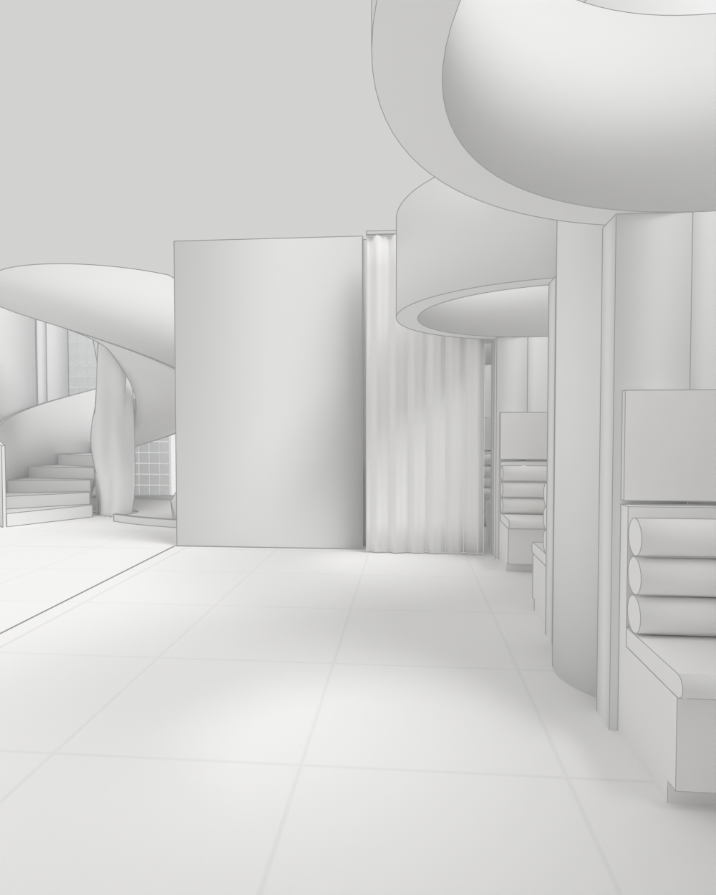

24/11/2026 · placé d'après le plan, en fantôme et en fil de fer
Tu as validé les éléments fixes et la liste du mobilier, et on garde les rideaux et la
sculpture. Voici le mobilier du rez-de-chaussée, placé d'après le plan : 13 tables de service, 3 mange-debout, le bar
et ses 7 tabourets, 3 jardinières avec un arbre, les suspensions et les lampes de table. Chaque table porte un
numéro : c'est la base de la carte en direct. Aucun meuble ne touche un autre élément du modèle.
Fantôme, le style par défaut
Le mobilier est coupé à 1,20 m comme le reste : les tables, les chaises et les tabourets restent pleins. Vu du haut, les suspensions sont masquées. En 3D, elles sont en fantôme, comme le haut des arbres.

Vue du haut

Vue 3D
Les numéros de la carte

La vue du haut, avec le numéro de chaque table
N°
Table
Places
Assises
1
Tambour 1
6
banquette en U et 3 fauteuils
2
Tambour 2
6
banquette en U et 3 fauteuils
3
Tambour 3
6
banquette en U et 3 fauteuils
4
Tambour 4
6
banquette en U et 3 fauteuils
5
Rangée, table 1
4
chaises
6
Rangée, grande table
10
chaises
7
Salle, table 1
4
chaises
8
Salle, table 2
2
chaises
9
Salle, table 3
2
chaises
10
Façade, table haute 1
2
tabourets
11
Façade, table haute 2
1
tabourets
12
Façade, table haute 3
2
tabourets
13
Façade, table haute 4
2
tabourets
14
Mange-debout 1
2
debout
15
Mange-debout 2
4
debout
16
Mange-debout 3
2
debout
Bar
Bar
7
tabourets
60 places assises et 8 debout. La liste est aussi dans
modele/floor1-tables.json, avec la position de chaque table sur le plan et dans le modèle. C'est ce
que lira la couche en direct.
La rangée le long des tambours

Le modèle, en blanc et à pleine hauteur
Le vrai lieu, photo 10
Les tables sont à 0,75 m, avec les chaises fines en acier. Au-dessus de chaque pied, une suspension plate. La grande table (n° 6) compte dix chaises sur trois pieds : ce sont les trois points du plan. Au fond, le rideau de l'alcôve.
Les tables hautes de la façade droite

Le modèle, en blanc et à pleine hauteur
Le vrai lieu, photo 8
Quatre tables hautes à 1,05 m, avec des tabourets côté salle. Derrière elles, une tablette de 0,42 m suit les pavés de verre et contourne le poteau de la façade.
Un tambour et un mange-debout

Le modèle, en blanc et à pleine hauteur
Le vrai lieu, photo 31
Dans chaque tambour : une table ronde de 0,96 m sur un pied conique, trois fauteuils, une suspension plate et une lampe. Devant, un mange-debout en bois sur deux tréteaux en A. Le bar a maintenant son repose-pieds.
Fil de fer, au choix dans l'application
Le même modèle, en arêtes seulement. Les chaises se lisent comme les symboles du plan.

Vue du haut

Vue 3D
Trois corrections de l'étape 3

Le rideau de l'alcôve, refait
Le rideau de l'alcôve a des plis souples, une tringle au plafond et un trait fin : on lit du tissu, plus une cloison. Il est décalé de 6 cm et passe entre les anneaux suspendus des tambours 3 et 4. Avant, il traversait celui du tambour 4.
Les banquettes des tambours avaient une assise trop profonde. Elle fait maintenant 0,46 m au lieu de 0,60 m, et le U s'arrête là où le plan l'arrête, 22 cm plus tôt. Sinon, les fauteuils du plan ne tenaient pas.
La tablette de la façade droite manquait à l'étape 3. C'est la bande sombre du plan, derrière les tables hautes.
Les choix que j'ai faits
Les hauteurs viennent des photos. La rangée et la salle sont à 0,75 m (photos 9 et 10). La façade droite est à 1,05 m, avec des tabourets (photo 8).
La grande table (n° 6) est dessinée d'un seul trait sur le plan, avec trois pieds. Je l'ai gardée en une table de dix.
Les carrés en bois près du bar sont des mange-debout sur tréteaux, comme celui de la photo 31.
Le rectangle en bois de l'alcôve est une console basse.
Les petits symboles à deux traits du plan sont des prises de sol. Ils ne sont pas modélisés.
Les suspensions sont masquées dans la vue du haut, pour ne pas cacher les tables. En 3D, elles restent en fantôme, comme le haut des arbres.
Questions
Les tables et leurs hauteurs te semblent-elles justes ? Surtout la rangée de la façade droite, en tables hautes.
La numérotation te va-t-elle pour la carte : 1 à 4 les tambours, 5 et 6 la rangée, 7 à 9 la salle, 10 à 13 la façade, 14 à 16 les mange-debout ? Et la grande table : une table de dix, ou trois tables (6a, 6b, 6c) ?
La suite, c'est la couche « en direct ». Je propose de commencer par le restaurant fictif (nom, carte, équipe) et un service simulé, puis la carte interactive. Ou tu préfères voir d'abord la carte interactive, avec des données provisoires ?
Sources
LAIR Restaurant & Bar, Gurugram, par RENESA Architecture Design Interiors Studio (2024). Les
photos sont d'Avesh Gaur, sur ArchDaily. Elles servent seulement de référence pour la modélisation.